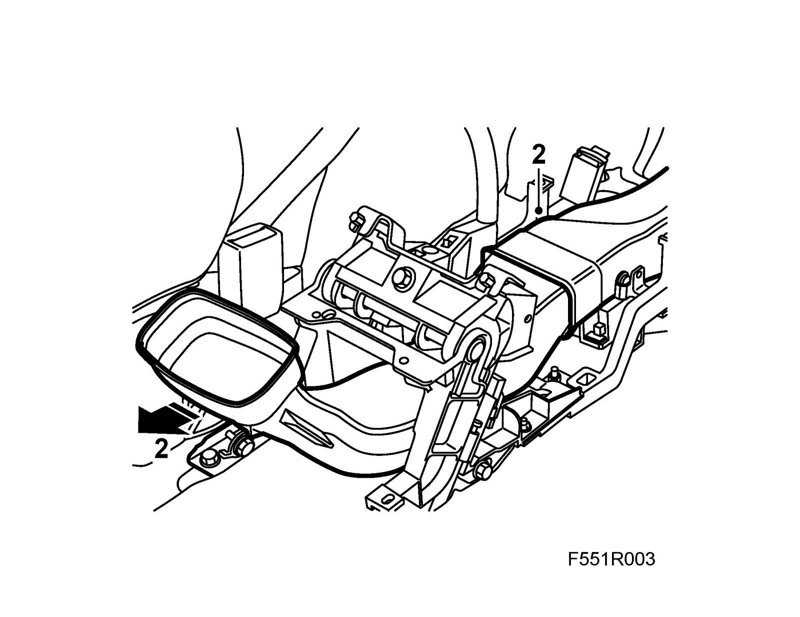
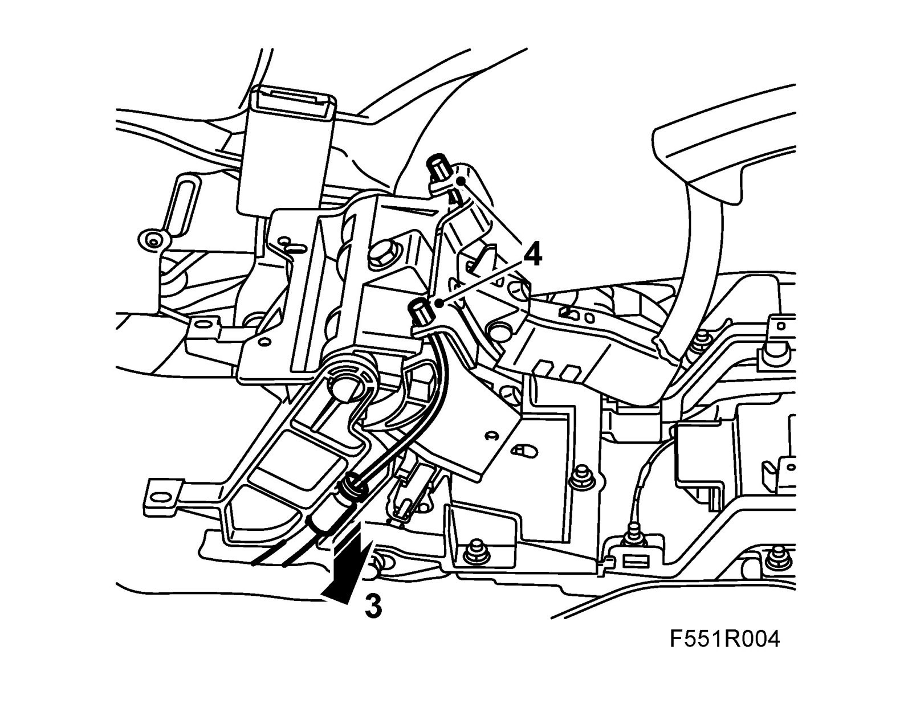
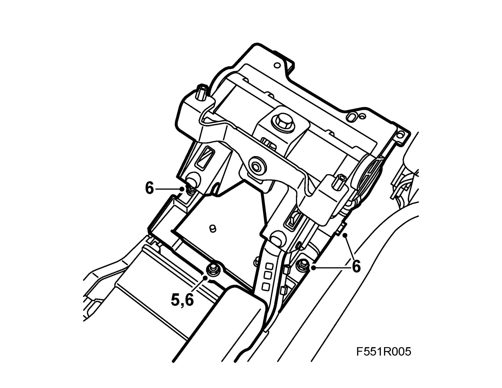
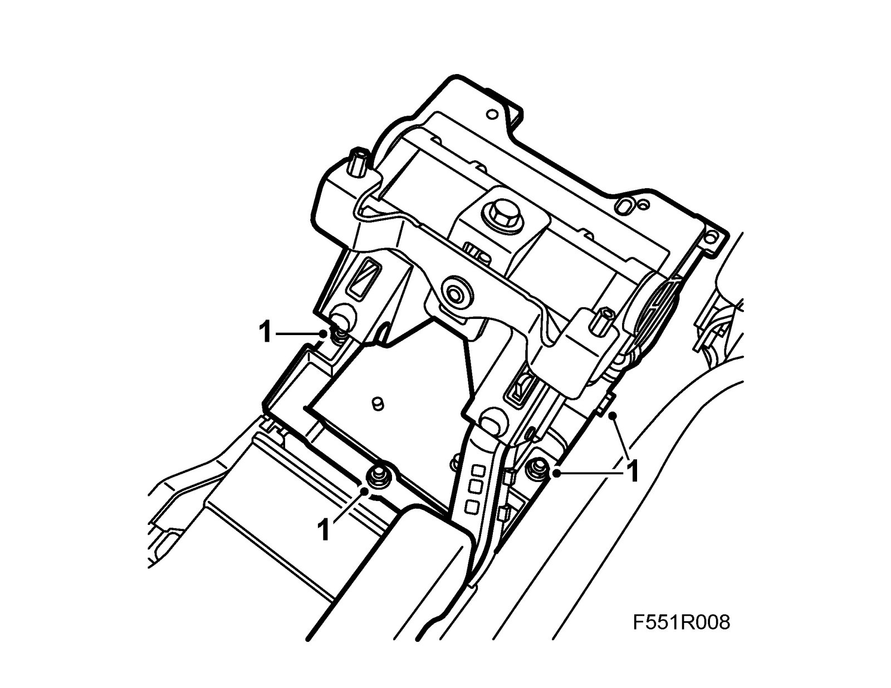
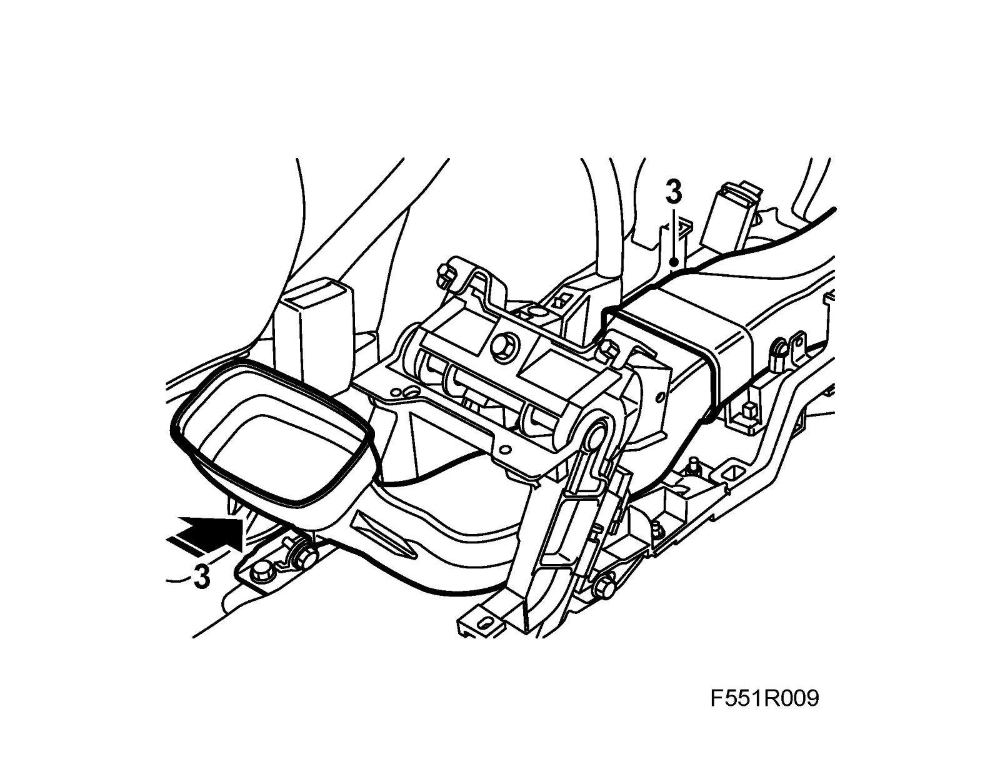
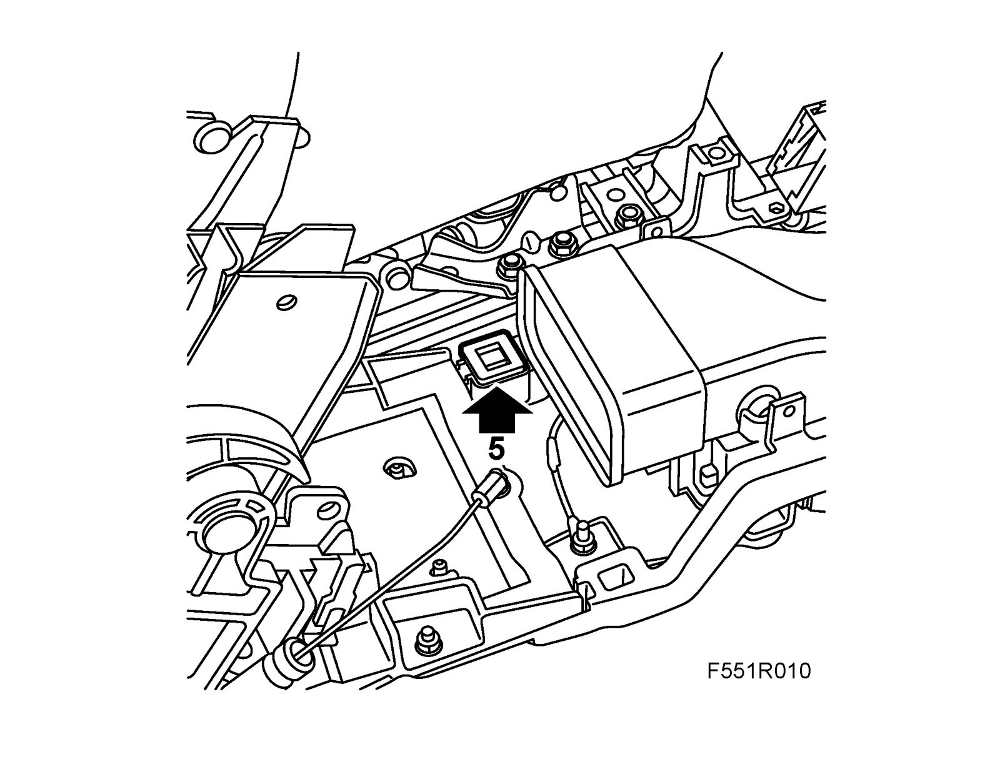

Handbrake Lever
Handbrake leverTo remove
1. Remove the floor console.
2. Remove the rear air duct.

3. Loosen the adjustment and unhook the cables.

4. Remove the cable ferrules from the console.
5. Mark the position of the front nut.

6. Remove the bolts and nuts holding the lever mechanism. Lift out the mechanism.
To fit
1. Fit the lever and holder to the console. Make sure the front nut is aligned with the marking.
Tightening torque: 13 Nm (10 lbf ft)

2. Connect and adjust the Handbrake cables.
3. Fit the air ducts.

4. Fit the floor console.
Note
Make sure the lever assumes the correct height in relation to the centre console before fitting the side pieces. Adjust by changing the stop washer underneath the lever.
5. Adjust the lever height in relation to the centre console by fitting the correct stop washer.
